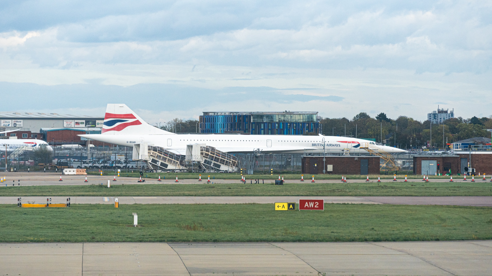

Aviation
Flying
Aircraft, airports, window views, and historical routes exported from the personal Flight Log.
Where I've flown
World flight map
Flight history
General statistics
Aircraft history
Special liveries flown
Planespotting
Airport index
Aviation photography